MapLooper: Live-looping of distributed gesture-to-sound mappings
Abstract
This paper presents the development of MapLooper: a live-looping system for gesture-to-sound mappings. We first reviewed loop-based Digital Musical Instruments (DMIs). We then developed a connectivity infrastructure for wireless embedded musical instruments with distributed mapping and synchronization. We evaluated our infrastructure in the context of the real-time constraints of music performance. We measured a round-trip latency of 4.81 ms when mapping signals at 100 Hz with embedded libmapper and an average inter-onset delay of 3.03 ms for synchronizing with Ableton Link. On top of this infrastructure, we developed MapLooper: a live-looping tool with 2 example musical applications: a harp synthesizer with SuperCollider and embedded source-filter synthesis with FAUST on ESP32. Our system is based on a novel approach to mapping, extrapolating from using FIR and IIR filters on gestural data to using delay-lines as part of the mapping of DMIs. Our system features rhythmic time quantization and a flexible loop manipulation system for creative musical exploration. We open-source all of our components.
Author Keywords
Digital Musical Instrument, mapping, looping, synchronization, embedded computing
CCS Concepts
Applied computing Media arts; Hardware Sensor devices and platforms; Sound-based input / output.
Introduction
Composers Pauline Oliveros and Terry Riley explored technology-driven repetition in music in the 1950s through pioneering experiments with tape loop techniques and tape delay/feedback systems [1]. Their system, Time Lag Accumulator, worked by stringing tape between two tape recorders and feeding the signal from the second machine back to the first, mixing incoming sound with the tape’s previously recorded sound. Later, digital looping devices re-implemented this concept. Digital memory replaced magnetic tape, and digital loopers are now available in much smaller form factors than magnetic tape recorders.
A Digital Musical Instrument (DMI) consists of a gestural interface and a sound generation [2]. The gestural interface and sound generator are separate units related by mapping strategies. Hunt et al. demonstrated [3] that different mappings can completely change an instrument’s behavior.
Mappings have been employed in synthesis engines [4], physical models [5], or audio effects [6]. In these contexts, mappings facilitate skill-based performance, characterized by rapid, coordinated movements in response to continuous signals [7]. This type of performance often involves instruments with a high level of mapping transparency, where the link between a performer’s gesture and the resulting sound is clear to both audience and performer, correlating with instrument expressiveness [8]. Musicians seeking the aesthetics of accurate and precise timing typically require a high skill level, while existing tools for creating loop-based music such as music sequencers, samplers, and loopers offer beginners a low “entry fee” [9]. However, the control mapping of these tools is often opaque and difficult for the audience to understand. In this work, we explore mapping in the context of loop-based music performance with the goal of creating instruments with a low entry fee and high mapping transparency.
In this paper, we first review several looping tools and list our design requirements. We then describe our mapping and synchronization platform for embedded devices, and validate our approach through the gesture-to-sound looping tool MapLooper and two example synthesis applications. We finish by discussing perspectives beyond our work.
Related work
We review several looping tools involving gesture-to-sound mappings grouped into two main categories: a) audio stream loopers, b) control data stream loopers.
Audio stream loopers
Audio stream loopers have become popular in the form of commercial live-looping pedals. These devices usually have user interfaces with buttons and knobs for controlling recording and playback states, loop length, and volume of loop layers. Loop controls can also be controlled gesturally, giving the performer the possibility to perform with gestures and body movements.
SoundCatcher
SoundCatcher [10] (Image 1) is a live-looping system with a mid-air gestural control interface. The distance between the performer’s hands is mapped to the loop length and vibrotactile feedback. SoundCatcher is an example of the usage of an explicit mapping strategy for the control of live-looping.

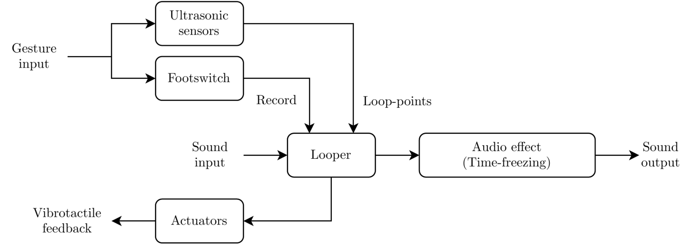
Gesture-to-sound interface of SoundCatcher. The performer is holding the actuators, and the ultrasonic sensors are mounted to a microphone stand.
SoundGrasp
SoundGrasp [11] (Image 2) features a mid-air gestural control interface with a glove controlling the recording/playback state and parameters for reverb and echo effects. Postures are classified into a vocabulary of control commands such as record/play/stop. SoundGrasp is an example of using machine learning as a mapping strategy for the control of live-looping.

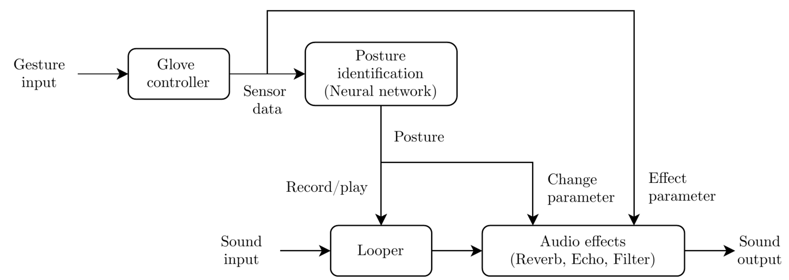
Gesture-to-sound interface of SoundGrasp. Gestures are recognized using a neural network. The identified postures are used as commands for controlling the looper. Sensor data is also mapped directly to audio effect parameters.
Control stream loopers
Streams of control data such as MIDI or Open Sound Control (OSC) messages or analog control voltages (CV) can also be looped, by inserting the looping device between a control interface and a sound generator like a mapping layer. As with audio stream loopers, control data is recorded into a buffer and played back in a loop. Control stream loopers offer the advantage that mappings can be changed post-recording, giving the possibility to re-route the control data to different synthesis processes.
MidiREX and Midilooper
MidiREX [12] by Peter Kvitek and Midilooper [13] by Bastl Instruments (Image 3) take their inspiration from digital loop pedals both in appearance and functionality. The devices record incoming MIDI messages into a buffer, also compatible with MIDI Polyphonic Expression (MPE) [14]. Midilooper can modulate MIDI velocity either randomly or using a control voltage input as a modulation source. Random modulation has become an increasingly popular feature of music sequencers as a tool for “humanization” [15]—a trend Cascone characterizes as an era of “post-digital” music defined by the aesthetics of failure and audible glitches [16]. Midilooper’s random velocity feature, labeled “human velocity”, can add dynamic variation to the recorded loops.

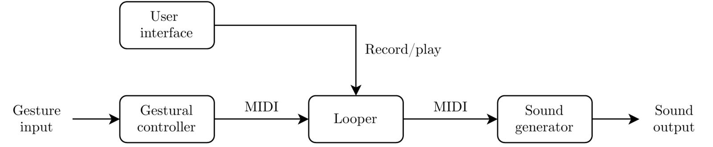
Gesture-to-sound interface of MidiREX and Midilooper. The MIDI protocol allows using any MPE-compatible gestural controller.
Ribn and Tetrapad
Ribn [17] by Nobjsa Petrovic and Tetrapad [18] by Intellijel (Image 4) have touch interfaces to record horizontal or vertical gestures. Up to eight sliders can be added to Ribn’s interface, with each sending a single MIDI control change message. Recording starts when the slider is touched and ends on release. Playback starts immediately after recording, and loop lengths can not be changed after recording. Tetrapad is a Eurorack module with four touch zones that sense both position and pressure, allowing for two-dimensional gesture recordings. Tetrapad has eight control voltage outputs that can be patched to any parameter within a Eurorack system. With the Tête expander module, recorded sequences can be quantized in both time and value, with the possibility of quantizing control voltage outputs to a selection of musical scales.

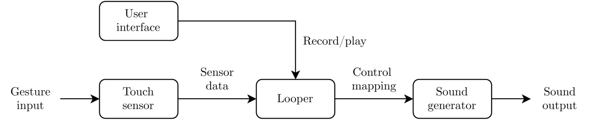
Gesture-to-sound interface of Ribn and Tetrapad + Tête. Touch sensor is embedded in the interface.
Drile
Drile [19] by Berthaut et al. (Image 5) is a virtual reality-based live-looping system. A bi-manual 6-DoF controller is used to create loops and control audio effects in a 3D space. Unlike the other looping tools, Drile supports both audio and control streams, and offers hierarchical live-looping by grouping loop layers in a hierarchical tree instead of a flat structure. Loops can be layered per instrument or section in a piece.

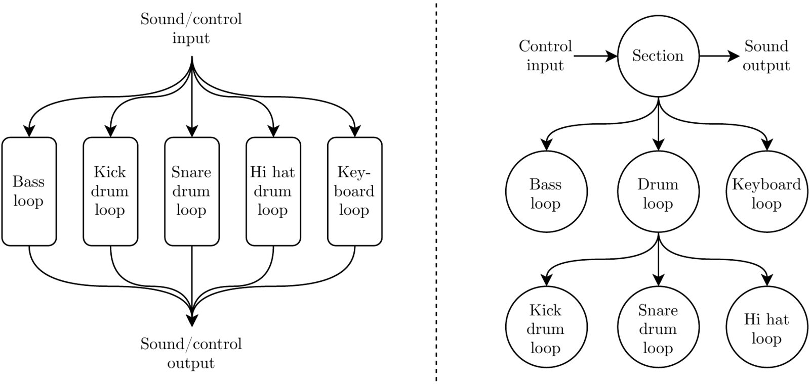
Traditional and hierarchical live-looping structures with Drile.
Summary
We provide a comparison of related work versus our tool MapLooper in Table 1. Interact refers to the gestural interface where *(x) means all devices supported by x. Loop refers to the interface for switching recording and playback state. Quantize refers to time quantization. Manipulate refers to any real-time processing of the recorded loops.
Project | Stream | Interact | Loop | Quantize | Synchronize | Manipulate | Map |
SoundCatcher | Audio | Ultra-sonic | Footswitch | No | Yes | Audio FX | Explicit |
SoundGrasp | Audio | Glove | Posture | No | No | Audio FX | Machine learning |
MidiRex | Control | *(MPE) | Button | Yes | Yes | No | Explicit |
Midilooper | Control | *(MPE) | Button | Yes | Yes | Random/CV | Explicit |
Ribn | Control | Touch | Touch | No | No | No | Explicit |
Tetrapad | Control | Touch | Touch | Yes | Yes | CV | Explicit |
Drile | Both | 6-DoF | 6-DoF | Yes | No | No | Explicit |
MapLooper | Control | *(libmapper) | *(libmapper) | Yes | Yes | Random | Open-ended |
While most of the tools reviewed contain their own gestural interface; only MidiRex and Midilooper can use external gestural interfaces. However, with these two tools, the recording and playback state can only be controlled using a button. All of the reviewed tools feature either time quantization, external synchronization, or loop manipulation. Most of the tools’ mapping strategies are explicit, except for SoundGrasp, which employs mapping using machine learning.
Design requirements
Our review guided the design requirements of our tool that should support:
changing sound sources after recording,
looping streaming data from different gestural controllers,
controlling loops with open-ended gestural interfaces,
quantizing time,
synchronizing time externally,
manipulating loops by random modulation,
mapping with both explicit and machine learning strategies,
running on a wireless embedded device,
replicating its open-source components.
Infrastructure for embedded, distributed and synchronized mapping
To build applications for live-looping satisfying the design requirements that we elicited, we developed a connectivity infrastructure for wireless mapping and synchronization. We ported existing libraries for mapping and synchronization to a wireless embedded platform.
Embedded platform
For the wireless embedded platform, we use the ESP32 microcontroller: a small, cheap, and sufficiently powerful chip for digital signal processing [20].
Mapping framework
To build a looper with advanced mapping capabilities, we use the mapping software libmapper [21] as the main building block.
Embedded Mapping Components
We adapted libmapper and its dependencies to run on ESP32 platforms: we implemented functions in compat-idf for compatibility between pthread and the Free Real-Time Operating System (FreeRTOS), we ported the liblo library for OSC communication, and we compiled the zlib for data compression.

Structure of the libraries ported to ESP32 for libmapper support.
liblo
The liblo library relies on POSIX sockets and threads (pthreads) for creating UDP/TCP sockets and servers. The Espressif IoT Development Framework (ESP-IDF) [22]) contains a pthread library that partially translates the FreeRTOS API into the POSIX threads API that we needed to update.
compat-idf
We implemented several POSIX functions that were missing for networking embedded DMIs (getnameinfo, gai_strerror, gethostname, getifaddrs, freeifaddrs) and packaged as an open-source ESP-IDF component, compat-idf [23].
libmapper-esp
We packaged these four components, liblo, libmapper, compat-idf, and zlib, as an open-source ESP-IDF component, libmapper-esp [24].
libmapper-arduino
To facilitate embedding libmapper support in DMIs like the T-Stick DMI using common Integrated Development Environments, we implemented an Arduino version of the libmapper library that we release as the open-source libmapper-arduino library [25].
Testing
We measured round-trip latency, jitter, and package loss for data transmitted through embedded libmapper. Our test setup consisted of applications running on two computing devices. 1) The firmware of an ESP32 WROVER KIT development board [26] running the libmapper-esp library creates one input and one output signals. The input signal handler is set to forward incoming data to the output signal. 2) A software application running on a MacBook Pro laptop (16-inch, 2019, macOS 10.15) sends a 100 Hz signal to the ESP32, and we measure the time between sending and receiving data. The ESP32 was running in access-point mode and the computer was connected to this access-point through WiFi. The results are in Image 7 .

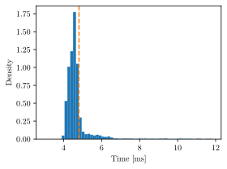
Histogram of round-trip latency measurement with power saving feature disabled. A 100 Hz is signal measured over a period of 100 seconds. The dashed line shows the mean round-trip latency of 4.81 ms.
We found that the ESP32 has a WiFi power-saving feature enabled by default. Disabling this feature had a significant impact on low latency performance. We performed measurements with power-saving enabled or disabled. The mean of the round-trip latency was 406 ms with power saving enabled and 4.81 ms when disabled. According to our results, in a one-way communication situation, where the ESP32 is only transmitting data, an average end-to-end latency =2.41ms (half of round-trip) can be expected.
We performed three more measurements at increasing rates for testing latency, jitter; and packet loss at different signal rates. The results are in Image 8.

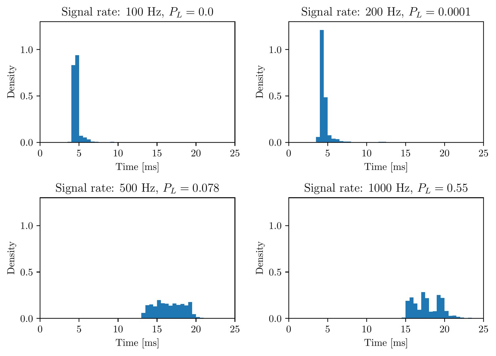
Histograms of round-trip latency of test signals at 100 Hz, 200 Hz, 500 Hz, and 1000 Hz, with 10,000 test points recorded for each signal. Packet loss PL and frequency is listed in the title of each histogram.
We found that the system has a significant packet loss for signals at 500 Hz. For signals at 1000 Hz, the packet loss is substantial, with 55% of packets being dropped. The jitter also increases with frequency, which can be observed in the increase of the standard deviation of the latency listed in . There is no significant change in the mean latency for signals at 100 Hz and 200 Hz. For signals at 500 Hz, the latency increases by a factor of 3. Signals at 500 Hz and 1000 Hz had similar performance in terms of latency and jitter, but the packet loss increases from 7.8% at 500 Hz to 55% at 1000 Hz. Table 2 provides results from latency measurements.
Signal rate [Hz] | Mean latency [ms] | Std. dev. of latency [ms] | Packet loss |
|---|---|---|---|
100 | 4.81 | 1.56 | 0.0 |
200 | 4.78 | 1.86 | 0.0001 |
500 | 16.6 | 1.92 | 0.078 |
1000 | 17.9 | 1.98 | 0.55 |
Our results for the embedded libmapper implementation were slightly better than previous studies by Wang et al. [27], who conducted tests of latency and jitter with OSC communication over WiFi using ESP32. They measured a mean round-trip latency of 6.62 ms, which is slightly higher than the 4.81 ms we measured in this project, both at 100 Hz. Both measurements remain well below the “acceptable upper bound on the computer’s audible reaction to gesture at 10 ms” proposed by Wessel and Wright [9].
Synchronization framework
For time synchronization between devices on a wireless network, we ported Ableton Link [28]: an open-source library for synchronizing tempo, beat, phase, and start/stop commands. Turchet et al. mention Ableton Link as a candidate for becoming a standard for music synchronization for Internet of Musical Things (IoMusT) devices [29].
Embedded Synchronization Components
To compile and run Ableton Link on ESP32, we needed to port the following modules to FreeRTOS:
Clock : a simple timer with microseconds resolution.
Context for the asynchronous operation of Ableton Link.
LockFreeCallbackDispatcher for real-time safety of the session state.
Random for random identification string generation for the peer.
ScanIpIfAddrs for retrieving information about the available network interfaces on the system.
We distribute this library as an open-source ESP-IDF component: link-esp [30].
Testing
To test our embedded port of Ableton Link, we created a test setup for measuring the delay between peers. The test setup consisted of two MacBook Pro laptop computers (Computer 1: 16-inch, 2019 and Computer 2: 15-inch, 2018; both running macOS 10.15) and an ESP32 board, all connected to a RIGOL DS1054 oscilloscope. Two probes were connected to an audio jack from the headphone output of each of the computers. One probe was connected to a GPIO pin of the ESP32. The computers synthesized a pulse signal through Ableton Live [31]. The ESP32 ran a test software outputting a pulse on a GPIO pin. All devices were connected through an Ableton Link session and outputted a periodic pulse on every quarter note at 120 BPM. A plot of the measurements is in Image 9.
We found that the ESP32 performs similarly to the two laptop computers in terms of inter-onset delay. Over 10 minutes, the average delay between Computer 1 and ESP32 was 3.03 ms (min: -6.62 ms, max: 0.02 ms).

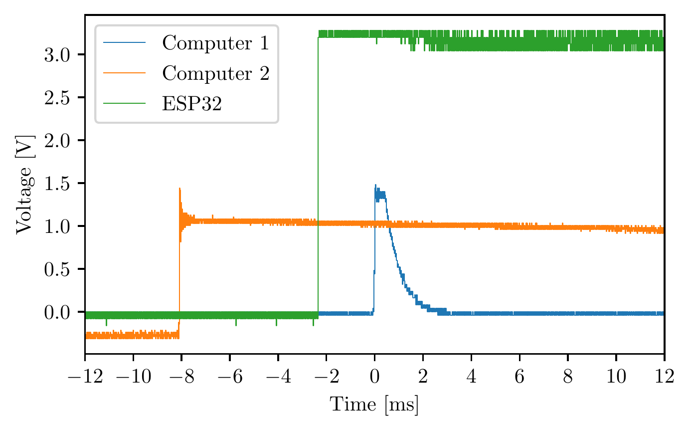
Oscilloscope measurement of an Ableton Link session consisting of two computers and an ESP32. All peers output a pulse signal at every quarter note at 120 BPM.
Application: implementation of MapLooper: gesture-to-sound looper
This section describes MapLooper, our gesture-to-sound looping tool built upon our connectivity infrastructure. We implemented MapLooper based on a delay-line model using libmapper map expressions. We present two musical applications built with the tool. We distribute MapLooper as an open-source software [32].
Looping with a delay-line
We can build a digital looper by adding feedback to a delay-line. A digital delay-line is a special case of IIR filtering, which is supported by libmapper for exponential smoothing. The discrete-time system implementing a digital looper can be expressed in terms of a linear interpolation between an input , and a delayed output term , with the linear interpolation factor representing a record signal so that: . A block diagram of this system is in Image 10. For most live-looping devices, the record/playback state is boolean, and the signal is either 0 or 1. When , only the delay-line output is passed to the system’s output. When , the input is passed directly to the output and into the delay-line, thereby being recorded. For , overdub can be achieved as the input is mixed with the delayed input.

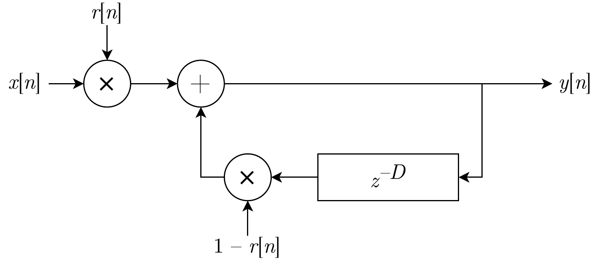
Block diagram of basic looping system implemented as a delay-line with feedback.
Synchronization and time quantization
For a loop to be synchronized to a meter, the length of the delay-line should be specified in terms of tempo [bpm] and duration in beats
For a 1-bar loop with a tempo of 140 bpm and time signature 4/4, this results in
At the time of our initial implementation, delay-lines in libmapper were non-interpolating in terms of delay-length. We first solved this issue by sampling the input at a rate given by an integer subdivision of the tempo, ensuring that delay-lengths were always an integer multiple of the loop-length in beats. We have since added fractional delay lengths to libmapper.
We added a sample-and-hold structure to the system to implement tempo-synchronized sampling. A clock signal synchronized with the tempo triggers a sampling of the input signal . The rate of the clock determines the quantization. This rate is commonly given for analog synchronization systems in the unit pulses per quarter note (PPQN). A block diagram of this system is in Image 11.

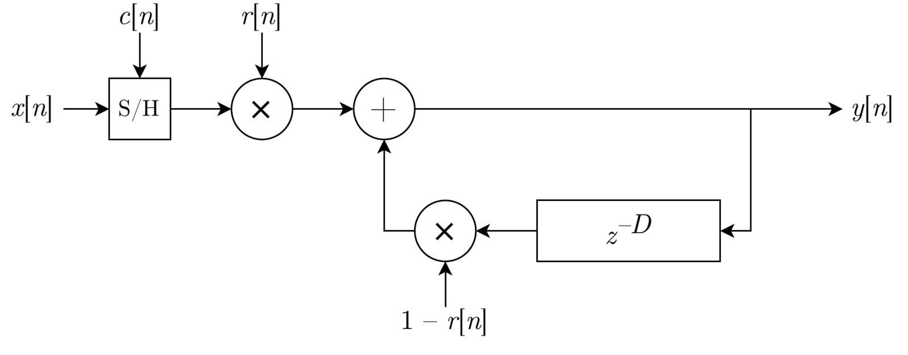
Block diagram of looping system with time quantization.
Loop manipulation
We implemented a simple modulation system modelled on the sample-and-hold structure. We used a uniform noise generator as a modulation source, sampled at the same rate as the input. We added this modulation signal within the feedback path, so that an input sequence could be recorded, after which modulation could be applied to make the sequence slowly evolve over time. A block diagram of the system is in Image 12.

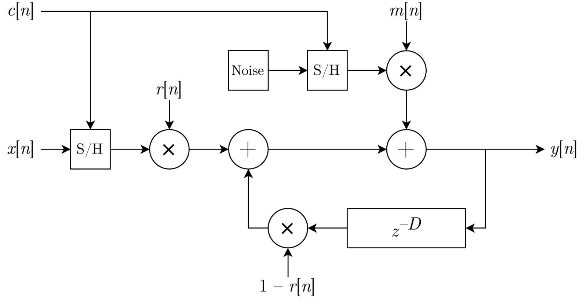
Block diagram of loop manipulation system. The loop is modulated by noise through a sample-and-hold structure. The modulation is within the feedback path.
The uniform noise generator creates a noise signal with a range between [-1, 1] multiplied by the signal , controlling the modulation amount. For small amounts of modulation, the original contour of a recorded sequence is retained on a macro timing level with an increasing variation on the micro timing level.
Control signals
MapLooper instantiates a libmapper device and initiates a Link session. The control interface consists of five signals (Table 3): record, length, division, modulation, and mute.
Signal | Description | Unit | Min | Max |
|---|---|---|---|---|
record | Controls whether input is active | - | 0 | 1 |
length | Length of the loop | beats | 1 | 100* |
division | Time quantization | PPQN | 1 | 100 |
modulation | Amount of modulation | - | 0 | 1 |
mute | Controls whether output is active | - | 0 | 1 |
The record signal represents the signal in . The length and division signals determine the length of the delay-line by the relation: . The length signal is limited by the current maximum of 100 samples of delay in libmapper, though the library can be recompiled with additional memory. The modulation signal represents the signal in . The mute signal was added to control whether the output from local/recv propagates to the output signal.
For each loop instance, a convergent map is created between the control signals, the local/send, and the local/recv signal. A map expression is created for the map, describing the system in Image 13.

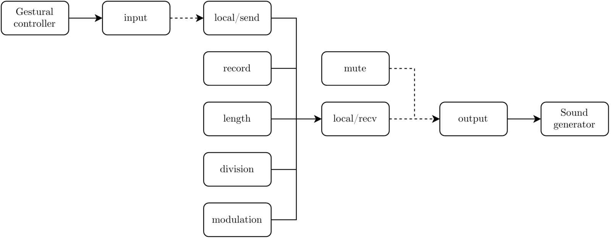
Block diagram of mapping configuration. Each block represents a signal. The solid lines represent the convergent mapping between the control signals and the local send and receive signals. The dashed lines are internal mappings done outside of libmapper.
During loop updates, the input is sampled at a rate synchronized with Link. The sampled value is sent to the local/send signal, and the map expression is evaluated. Finally, if the Loop instance is not muted, the value of the local/recv signal is copied to the output signal.
By mapping a gestural controller to the input signal and a sound generator to the output signal (Video 1 and Image 14), a DMI with looping capabilities can be implemented.
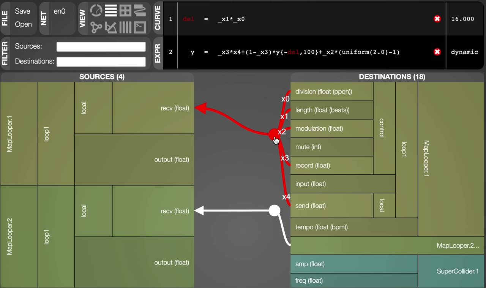
▶Construction of the mapping in visualization tool Webmapper.

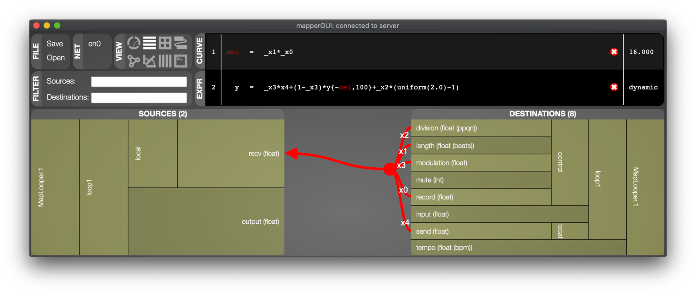
Visualization of the mapping in visualization tool Webmapper.
Graphical User Interface
For testing, we created a cross-platform GUI application based on the JUCE framework [33], containing six sliders and a button (Image 15). When launching the GUI, a loop instance is created, and sliders are initialized to the default values of control signals. Slider 1 input sends its value to the loop’s input, and similarly to Ribn and Tetrapad the value of the slider is only recorded when the slider is pressed. Slider 2 output displays the output of the loop and is not editable. The remaining four sliders control: the loop length in beats (slider 3), the amount of noise modulation (slider 4), division in pulses per quarter note (slider 5), and tempo in beats per minute (slider 6). A toggle at the bottom controls whether the local loop map’s output propagates to the loop’s output. We distribute MapLooper-gui as an open-source project [34].

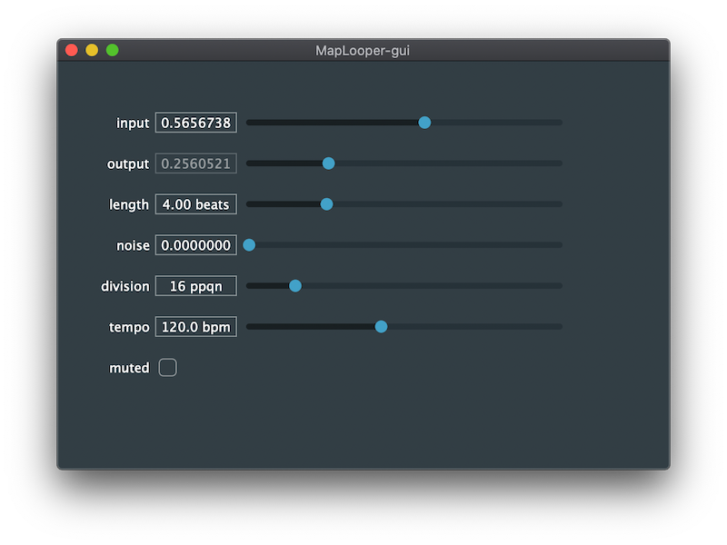
Screenshot of JUCE-based MapLooper-GUI.
Sound synthesis examples
SuperCollider extension: MapperUGen
We implemented a new SuperCollider UGen server extension called MapperUGen [35] for using libmapper. The extension has classes for creating input and output signals (MapIn and MapOut) with signal names and ranges specified as arguments for the constructor. When synths are created and destroyed in SuperCollider, UGens are erased from memory, which causes maps to SuperCollider to be destroyed. We implemented a system for persistent maps by saving libmapper signals in a global variable. When MapIn and MapOut are instantiated, the classes automatically bind to existing signals with the signal name given as an argument. This solution optimizes the workflow considerably when prototyping mappings.
Harp demo
We created one musical demo by mapping the output signal to a harp synthesizer implemented in SuperCollider (Video 2).
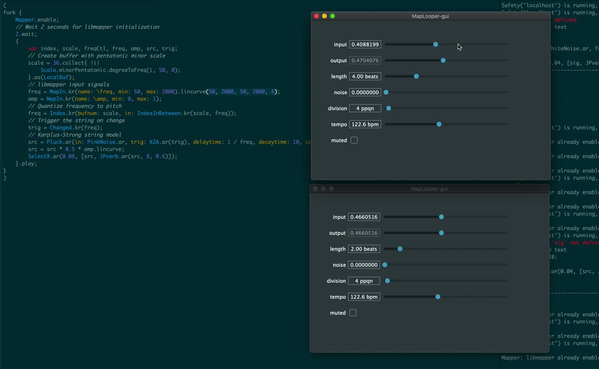
▶Demo with harp synthesizer implemented in SuperCollider.
The harp synthesizer is based on a Karplus-Strong string model. Two input signals, frequency and amplitude control the frequency and amplitude of the string model. The frequency input is quantized to a melodic scale within the synthesizer, and a slope detector on the quantized frequency triggers the string excitation. As a result, when moving the input slider, melodic notes are triggered along with the range of the slider. The interaction provides a similar feel as when sliding fingers over the strings of a harp. The SuperCollider code for the demo is:
fork {
Mapper.enable;
// Wait 2 seconds for libmapper initialization
2.wait;
{
var index, scale, freqCtl, freq, amp, src, trig;
// Create buffer with pentatonic minor scale
scale = 36.collect{ |i|
Scale.minorPentatonic.degreeToFreq(i, 50, 0);
}.as(LocalBuf);
// libmapper input signals
freq = MapIn.kr(name: \freq, min: 50, max: 2000);
amp = MapIn.kr(name: \amp, min: 0, max: 1);
// Quantize frequency to pitch
freq = Index.kr(bufnum: scale, in: IndexInBetween.kr(scale, freq));
// Trigger the string on change
trig = Changed.kr(freq);
// Karplus-Strong string model
src = Pluck.ar(in: PinkNoise.ar, trig: K2A.ar(trig), delaytime: 1 / freq);
src * 0.5;
}.play;
}Embedded Sound Synthesis
We also created a proof-of-concept demo of using the looper with embedded sound synthesis (Video 3).
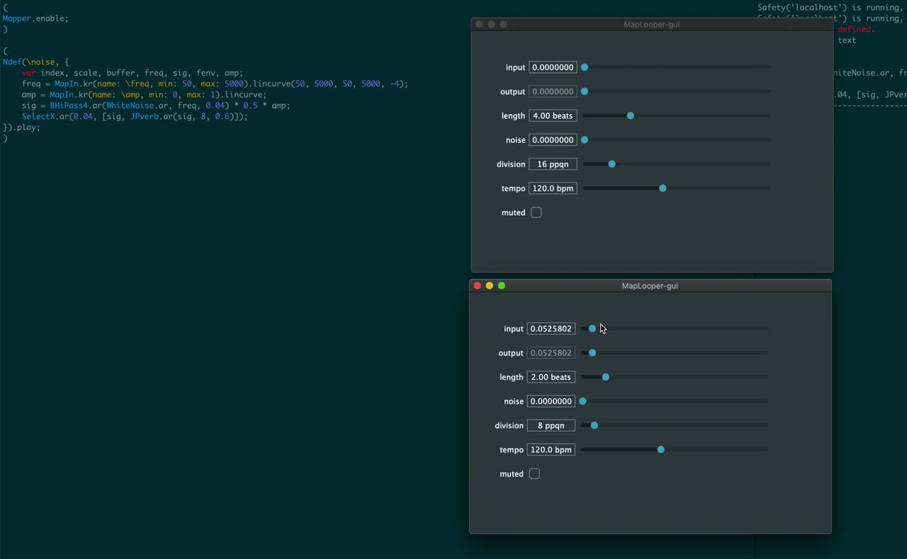
▶Embedded demo with pink noise passed through a Moog-style voltage-controlled filter emulation.
The demo was based on the ESP32 LyraT board [36] (Image 16), which contains an ESP32 WROVER module and an audio codec chip along with 1/8 inch TRS connectors for headphones and auxiliary audio input.

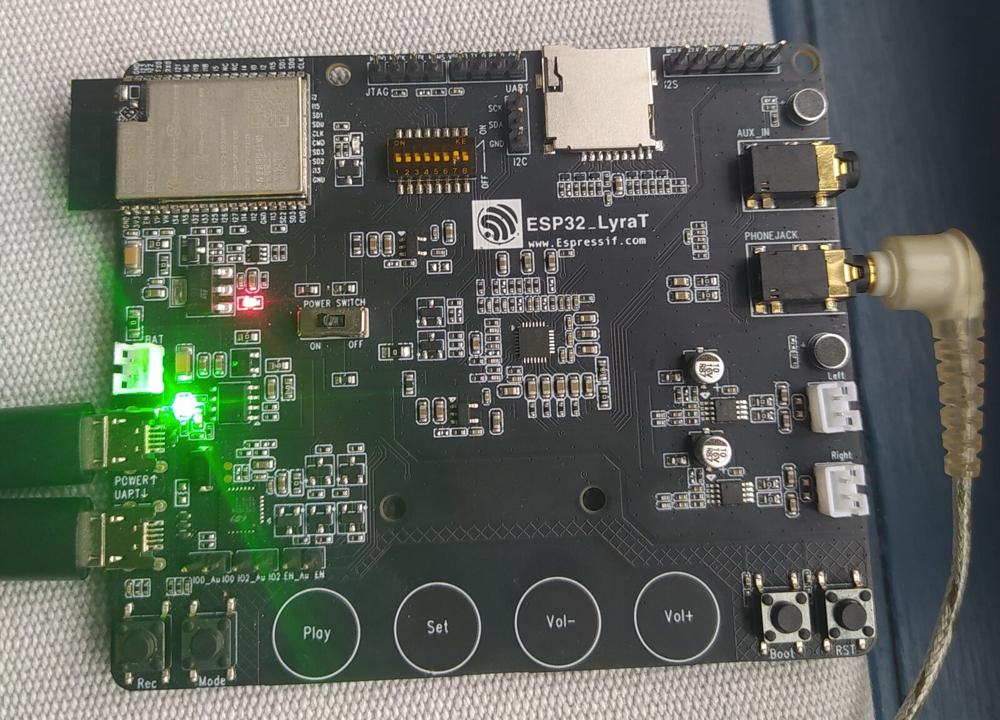
The LyraT board.
We release our demo [37] as an open-source project using the Faust library [38] for compiling a DSP program to the LyraT board, which is supported by the Faust compiler [39]. The DSP program used for the demo is:
import("stdfaust.lib");
ctFreq = hslider("cutoffFrequency", 500, 50, 3000, 0.01);
res = hslider("resonance", 0.5, 0, 1, 0.1);
gain = hslider("gain", 1, 0, 1, 0.01);
process = no.pink_noise : ve.moog_vcf(res, ctFreq) * gain;The program generates pink noise and passes it through a Moog-style voltage-controlled filter emulation. The program has three parameters: cutoff frequency, filter resonance, and output gain. A Loop is created for each parameter mapped to a libmapper signal that updates the parameter when receiving a value. A random number generator sends an input signal to each of the loop layers. The recorded signal is 1.0 when the program starts and is set to 0.0 after 10 seconds. The program continues indefinitely, repeating the same 1 bar sequence. A block diagram of the demo program is in Image 17.

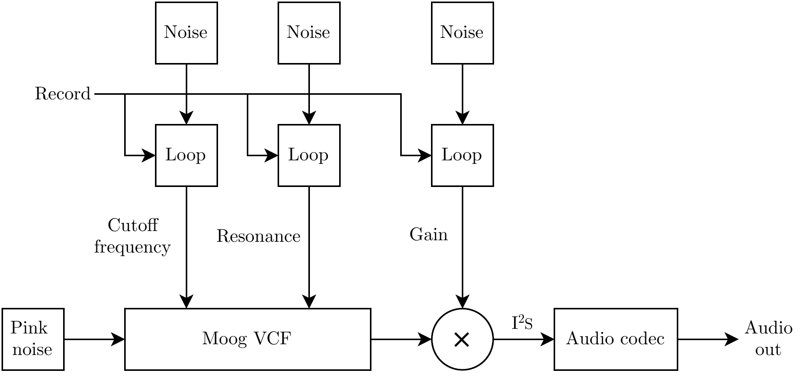
Block diagram of embedded sound synthesis example.
Conclusion and future work
We have presented the development of a live-looping system for gesture-to-sound mappings built on a connectivity infrastructure for wireless embedded musical instruments with distributed mapping and synchronization. We evaluated in the context of the real-time constraints of music performance: round-trip latency, jitter, and package loss of signals transmitted through embedded mapping; inter-onset delay between peers for networked looping synchronization. On top of this infrastructure, we developed MapLooper: a live-looping tool with example musical applications: a harp synthesizer with SuperCollider and embedded source-filter synthesis with FAUST on ESP32.
We follow by discussing perspectives on our work.
Scalability and flexibility of map expressions
Implementing our system using libmapper brings scalability, support for vector signals, signal instances [40] and freely mixing mapping and looping. The map expression interface allows for flexible mapping configurations for loop manipulation. The random modulation implementation could be changed to use any modulation signal by merely changing the map expression.
Delay-line models: continuous signals, zipper noise
One limitation is that the delay-line based model only allows for continuous signals. The delay-line model updates the output at every time quantization step. Continually updating the output can be an issue in scenarios where event-based signal updates are needed.
Additionally, the delay-line model causes issues when changing loop-length known from echo effects as zipper-noise. This noise is caused by discontinuities in the signal when adjusting the read pointer of a circular buffer. For interpolating delay-lines, the zipper-noise is replaced by Doppler-shifts. This effect has been used creatively as an audio effect, but it might not be what users expect for control data streams. The issue could be solved by cross-fading multiple read pointers when the loop-length is changed.
Latency compensation
When gestures are recorded through libmapper, all samples are time-tagged. Latency could be subtracted during playback to achieve accurate timing. Peers could continuously measure the latency between them by periodically sending a heartbeat signal and keeping a record of each peer’s round-trip latency. This idea is similar to how host time offsets are handled with Ableton Link. At sampling frequencies above 500 Hz, our implementation had significant reliability issues. Instead of networking all peers at a high sampling rate, each peer could locally acquire the gestural data at a higher sampling rate while only sending quantized data to the network.
Visual and haptic feedback
When recording gesture-to-sound sequences in our looper, the instantaneous feedback gets lost once the recording is finished, since the auditory feedback no longer corresponds to the physical gesture currently being held. In the case of a single loop layer recording, our MapLooper-GUI provides visual feedback through a slider that displays the current output value of a loop. However, for more complex mappings, where more layers are being recorded simultaneously, the current system provides no feedback on what has been recorded. This missing feedback could be in the form of visualization on a screen, displaying multiple recorded sequences simultaneously. The loop visualization tool could be developed as an extension of WebMapper. Additionally, feedback could be given in the form of haptic feedback, for instance with TorqueTuner [41] also embedding libmapper, to display force cues mapped to recorded sequence.
Multiple read pointers
Multiple variable-speed read pointers could be implemented to explore new looping techniques inspired by multi-tap delays and granular time-stretching audio effects. A single loop layer could control several voices by mapping the instances to voices on a polyphonic synthesizer, adding variations on a micro time-scale. Non-constant time quantization could add the shuffle effect popular on many drum machines and featured in MidiLooper.
Acknowledgements
The authors would like to thank:
Florian Goltz: for helping with porting Ableton Link to ESP32,
Eduardo Meneses: for collaborating on integrating libmapper in the T-Stick,
Filipe Calegario: for contributing examples in libmapper-arduino [25],
Simon Littauer: for sharing references and ideas on gesture looping,
Mathias Kirkegaard: for our feedback loops between MapLooper and TorqueTuner [41],
Romain Michon: for reviewing Mathias Bredholt’s master thesis [42] which includes this publication as contribution.
Citations
- ↩Peters, M. (1996). Michael Peters: The Birth of Loop (1996-). Retrieved from http://www.livelooping.org/history_concepts/theory/the-birth-of-loop/
- ↩Miranda, E. R., & Wanderley, M. M. (2006). New Digital Musical Instruments: Control and Interaction beyond the Keyboard. Middleton, USA: A-R Editions, Inc.
- ↩Hunt, A. D., Wanderley, M. M., & Paradis, M. (2002). The Importance of Parameter Mapping in Electronic Instrument Design. In Proceedings of the International Conference on New Interfaces for Musical Expression (pp. 88–93). Dublin, Ireland. https://doi.org/10.5281/zenodo.1176424
- ↩Hunt, A., & Wanderley, M. M. (2002). Mapping Performer Parameters to Synthesis Engines. Organised Sound, 7(2), 97–108. https://doi.org/10.1017/S1355771802002030
- ↩Wang, S., Wanderley, M. M., & Scavone, G. (2020). The Study of Mapping Strategies Between the Excitators of the Single-Reed Woodwind and the Bowed String. In H. Li, S. Li, L. Ma, C. Fang, & Y. Zhu (Eds.), Proceedings of the 7th Conference on Sound and Music Technology (CSMT) (pp. 107–119). Singapore: Springer Singapore. https://doi.org/10.1007/978-981-15-2756-2_9
- ↩Verfaille, V., Wanderley, M., & Depalle, P. (2006). Mapping Strategies for Gestural and Adaptive Control of Digital Audio Effects. Journal of New Music Research, 35, 71–93. https://doi.org/10.1080/09298210600696881
- ↩Malloch, J., Birnbaum, D., Sinyor, E., & Wanderley, M. M. (2006). Towards a New Conceptual Framework for Digital Musical Instruments. In Proceedings of the 9th International Conference on Digital Audio Effects (DAFx-06).
- ↩Fels, S., Gadd, A., & Mulder, A. (2002). Mapping Transparency Through Metaphor: Towards More Expressive Musical Instruments. Organised Sound, 7(2), 109–126. https://doi.org/10.1017/S1355771802002042
- ↩Wessel, D., & Wright, M. (2002). Problems and Prospects for Intimate Musical Control of Computers. Computer Music Journal, 26(3), 11–22. https://doi.org/10.1162/014892602320582945
- ↩Vigliensoni, G., & Wanderley, M. M. (2010). Soundcatcher: Explorations in Audio-Looping and Time-Freezing Using an Open-Air Gestural Controller. In Proceedings of the International Computer Music Conference (pp. 100–103). Retrieved from http://hdl.handle.net/2027/spo.bbp2372.2010.020
- ↩Mitchell, T., & Heap, I. (2011). Soundgrasp: A Gestural Interface for the Performance of Live Music. In Proceedings of the International Conference on New Interfaces for Musical Expression (pp. 465–468). Oslo, Norway. https://doi.org/10.5281/zenodo.1178111
- ↩Kvitek, P. (2014). MidiREX. Retrieved from https://midisizer.com/midirex/
- ↩Instruments, B. (2020). Midilooper. Retrieved from https://bastl-instruments.com/instruments/midilooper
- ↩The MIDI Manufacturers Association. (2018). MIDI Polyphonic Expression Version 1.0. Retrieved from https://www.midi.org/articles-old/midi-polyphonic-expression-mpe
- ↩Rodgers, T. (2003). On the Process and Aesthetics of Sampling in Electronic Music Production. Organised Sound, 8(3), 313–320. https://doi.org/10.1017/S1355771803000293
- ↩Cascone, K. (2000). The Aesthetics of Failure: “Post-Digital” Tendencies in Contemporary Computer Music. Computer Music Journal, 24(4), 12–18. https://doi.org/10.1162/014892600559489
- ↩Petrovic, N. (2018). Ribn. App Store. Retrieved from https://apps.apple.com/us/app/ribn/id1413777040
- ↩Intellijel. (2018). Tetrapad. Retrieved from https://intellijel.com/shop/eurorack/tetrapad/
- ↩Berthaut, F., Desainte-Catherine, Myriam, & Hachet, M. (2010). DRILE: An Immersive Environment for Hierarchical Live-Looping. In Proceedings of the International Conference on New Interfaces for Musical Expression (pp. 192–197). Sydney, Australia. https://doi.org/10.5281/zenodo.1177721
- ↩Grame-CNCM. (2020). DSP on the ESP-32 with Faust - Faust Documentation. Retrieved from https://faustdoc.grame.fr/tutorials/esp32/
- ↩Malloch, J., Sinclair, S., & Wanderley, M. M. (2015). Distributed Tools for Interactive Design of Heterogeneous Signal Networks. Multimedia Tools and Applications, 74(15), 5683–5707. https://doi.org/10.1007/s11042-014-1878-5
- ↩Espressif IoT Development Framework (ESP-IDF). (2020). Retrieved from https://github.com/espressif/esp-idf
- ↩Bredholt, M., & Frisson, C. (2020). compat-idf. Retrieved from https://github.com/mathiasbredholt/compat-idf
- ↩Bredholt, M. (2020). libmapper-esp. Retrieved from https://github.com/mathiasbredholt/libmapper-esp
- ↩Bredholt, M., Frisson, C., & Calegario, F. (2020). libmapper-arduino. Retrieved from https://github.com/mathiasbredholt/libmapper-arduino
- ↩Espressif. (2020). ESP32 Modules and Boards - ESP32 - — ESP-IDF Programming Guide Latest Documentation. Retrieved from https://docs.espressif.com/projects/esp-idf/en/latest/esp32/hw-reference/modules-and-boards.html#esp32-wrover-series
- ↩Wang, J., Meneses, E., & Wanderley, M. (2020). The Scalability of WiFi for Mobile Embedded Sensor Interfaces. In R. Michon & F. Schroeder (Eds.), Proceedings of the International Conference on New Interfaces for Musical Expression (pp. 73–76). Birmingham, UK: Birmingham City University. Retrieved from https://www.nime.org/proceedings/2020/nime2020_paper14.pdf
- ↩Goltz, F. (2018). Ableton Link: A Technology to Synchronize Music Software. In Proceedings of the Linux Audio Conference (pp. 39–42). Retrieved from http://dx.doi.org/10.14279/depositonce-7046
- ↩Turchet, L., Fischione, C., Essl, G., Keller, D., & Barthet, M. (2018). Internet of Musical Things: Vision and Challenges. IEEE Access, 6, 61994–62017. https://doi.org/10.1109/ACCESS.2018.2872625
- ↩Bredholt, M. (2020). link-esp. Retrieved from https://github.com/mathiasbredholt/link-esp
- ↩Ableton. (2020). Music Production with Live and Push | Ableton. Retrieved from https://www.ableton.com/en/
- ↩Bredholt, M. (2020). MapLooper. Retrieved from https://github.com/mathiasbredholt/MapLooper
- ↩JUCE: Class Index. (n.d.). Retrieved from https://docs.juce.com/master/index.html
- ↩Bredholt, M. (2020). MapLooper-Gui. Retrieved from https://github.com/mathiasbredholt/MapLooper-gui
- ↩Bredholt, M., & Frisson, C. (2020). MapperUGen. Retrieved from https://github.com/mathiasbredholt/MapperUGen
- ↩ESP32-Lyrat V4.3 Getting Started Guide — Audio Development Framework Documentation. (2020). Retrieved from https://docs.espressif.com/projects/esp-adf/en/latest/get-started/get-started-esp32-lyrat.html
- ↩Bredholt, M. (2020). MapLooper-Faust. Retrieved from https://github.com/mathiasbredholt/MapLooper-faust
- ↩Orlarey, Y., Fober, D., & Letz, S. (2009). FAUST: An Efficient Functional Approach to Dsp Programming. In E. D. France (Ed.), New Computational Paradigms for Computer Music (pp. 65–96). Retrieved from https://hal.archives-ouvertes.fr/hal-02159014
- ↩Grame-CNCM. (2020). DSP on the ESP-32 with Faust - Faust Documentation. Retrieved from https://faustdoc.grame.fr/tutorials/esp32/
- ↩J. Malloch, S. Sinclair, & M. M. Wanderley. (2018). Generalized Multi-Instance Control Mapping for Interactive Media Systems. IEEE MultiMedia, 25(1), 39–50. https://doi.org/10.1109/MMUL.2018.112140028
- ↩Kirkegaard, M., Bredholt, M., Frisson, C., & Wanderley, M. (2020). TorqueTuner: A Self Contained Module for Designing Rotary Haptic Force Feedback for Digital Musical Instruments. In R. Michon & F. Schroeder (Eds.), Proceedings of the International Conference on New Interfaces for Musical Expression (pp. 273–278). Birmingham, UK: Birmingham City University. Retrieved from https://www.nime.org/proceedings/2020/nime2020_paper52.pdf
- ↩Bredholt, M. (2021). Live-looping of distributed gesture-to-sound mappings.